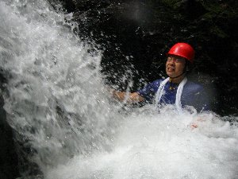

沢登り | 2006年８月 企画：きっかー |
|---|---|
| 今回は４人で遂行。天気、曇り。蒸し暑い。なかなかの沢登り日より。 max氏とｓ.まーしーは初体験。しかも、Max氏は地下足袋・・・ソールがフェルトになっている渓流足袋でさえ滑ってしまう事があるのに、地下足袋では数倍滑ると思われる。 初体験なのに、なめた奴だ・・・けど、彼に免じて参加を許す(笑)。 ｓ.まーしーは地下足袋にワラジと言う、昔風？のいでたち(笑)・・・これが一番滑らないらしいが、ワラジは一回切りの消耗品。 べっしーと僕は渓流足袋。 さて出発・・・・・ 初っぱなに釜(プールの様になっている所)が有り、いきなり入水、水泳大会(笑)・・・気持ち良〜い♪。 その後も泳いだり、小さな滝を登ったり、歩いたり、飛び石をぴょんぴょん跳ねたり。順調に先へ進んで行く。max氏も「滑る〜」と言いながら、何だか楽しそう。 沢の岩は苔や水で滑りすいので、足を着く所を一瞬で見極めながら歩くんです。 | |
 これがワラジだ！ |  泳いで小さい滝まで |
| １時間位進むと、前回足を滑らせて、怪我した滝(２段 ３ｍ＋７ｍ？)にぶつかる。 この滝は威圧的で迫力がある。 一般的には登らない所かも？(笑) 前回４ｍ位の高さから足を滑らせて大怪我したにも関わらず、 アホな俺はその直後にまた登り完登したので、もういいっって事で今回はパス。 しかし、あれっ？ 迂回ルートが見つからない。 そこで一段目の滝を登ったり、降りたり、辺りを見渡すもさあどこだろう？ よく分からないが、色々検討したあげく、右側のガレ場を登ることにした。 先行して行ってみる。 問題なさそうって事で、３人も後に続く。 ここを越すと少しだけ平坦な沢が続くが、すぐにまた滝がある。 ここは８ｍ位。 通常、滝登りは滝壺から這い上がる一歩がまず第１核心。 下に足が着かないので、流水に負けやすいからだ。 更に、抜け口は傾斜は落ちるのだが高さも有り、滑りやすい所なので、一番緊張する所で第２核心。 クライミング技術を考えると一番最初にノーロープで行かざろう得ない損な役割(笑)の俺は第一核心で多少苦労するも、 順調に越える。 自分の安全を確保し、ロープを降ろし、ｓ.まーしーが次に続く。 彼もこのところクライミングをほとんどやっていないようだが、天才的なスラブ(80度以下の岩壁)登りは健在で、順調に越える。 次にmax。しばらくしても、なかなか上がって来ない。 姿は見えないが、ときよりロープにテンションが掛かるので、登るのに苦労している感触。 べっしーが色々アドバイスしているのが見える。 やっぱり地下足袋では滑って駄目なのかな？ どうにもこうにもならない様で、結局諦めて迂回ルートを探すと言う。 彼らは安全そうな右側のガレ場を、どちらかと言うとケツをこちらに向けて(笑)、どんどん登って行く。 もうとっくに僕らの位置よりも高いが、彼らが遠くに見える。 お〜い。どこへ行く〜。 って大声で叫んでも、滝の音にかき消されて彼らには聞こえない。 しばらく待っても来ない、見えなくなった。 何故かな？と思って、辺りをよく見回すと、彼らがたどり着けない理由が何となく推測できた。 この場所はロープを設置して降りれる所は無いし、登ってきたこの滝を降る事は落ちる確率も高くなり、かなり危険。 なので、先へ行くしかない！！ ここからはｓ.まーしーと２人で・・・・。 | |
|  滝で大量な水を浴びます |  滝上から撮影 |
| この後も、７ｍ位の滝が３本ほどあり、なかなか緊張をさせられた。 やっぱり前回落下して怪我した事が脳裏に残っていて、滝の上部ではすっごく慎重に登り、気持ちのコントロールを必死にしている自分がいた。 しかも、慎重になりながらも、前側の足に思い切って体重を掛けないと滑りやすいので、その辺も難しい所だ。 ｓ.まーしーなら、ロープを出さなくても問題なさそうな滝も有ったが、安全性を重視してロープを出した。 そして、順調にｓ.まーしーと僕は沢のゴールに辿り着いた。 そう言えばゴール間近、２０ｍ位先に大きなイノシシがいて、何やら僕らをしばらく見ていたが、そのうちどこかへ消えていきました。 突っ込んで来られたら、たまったものでは無いですから、ここでもちょっと緊張(^^ゞ。 ＰＭ２時。登行時間：４時間位。 が・・・ゆっくりしてはいられない。 ところで彼らはどこへ行ったの？心 配なので、そこから林業用のモノレールやトレイルを急いで下り(途中で、カモシカが道から突然出てきて、びっくり・・・ワイルド・ワールド！！)、車まで戻る。 彼らは戻っていない。 大丈夫かなぁ？ ますます心配になった。 そこで彼らと別れた滝近くのトレイルに通ずる林道の終点まで車を走らせた。 すると、二人はそこにいたのだ。 お〜よかった〜。安堵して一気に緊張が解れ、ああだこうだと色々と言っていた気がするが、内容は覚えていない(笑)。彼らは山の経験もそれなりにあるし、 ＧＰＳも持っていたからまあ大丈夫だろうと思っていたけど、やっぱり顔を見るまでは安心できないからね。 べっしーとmaxは先のガレ場を登っていったが、上流側が岩壁に遮られ、僕らと合流出来ないと分かったらしく、大人しく下ってトレイルを歩き、ここで僕らと落ち合えると思ってゆっくりしていたらしい。 実は道が一本違っていたんだけど(^^ゞ。 そして、もう３時をまわっていたが、４人とも昼飯を食べていない。 沢のゴールで流しそうめんをやるはずだったが出来なかったので、車で田舎の道の駅みたいな所へ行き、携帯コンロを使って、そうめんを作り、頂きま〜す。これが・・・う〜まい〜。 腹が減っていたので、余計美味い〜。 ６人分を４人で完食！！ それにしてもマイナスイオンをいらないほど浴びれて、ありのままの自然の美しさを思う存分楽しませてくれる。 それでいて、スリリングな沢登り。 その良さを改めて感じた日でした(*^,^*)。 しかし、スポーツクライマー的見知だと、沢登りは刺激が強過ぎるので、夏のシーズンに１〜２回で充分な気がする(爆)。 | |
| コメント：キッカー、写真：べっしー | |